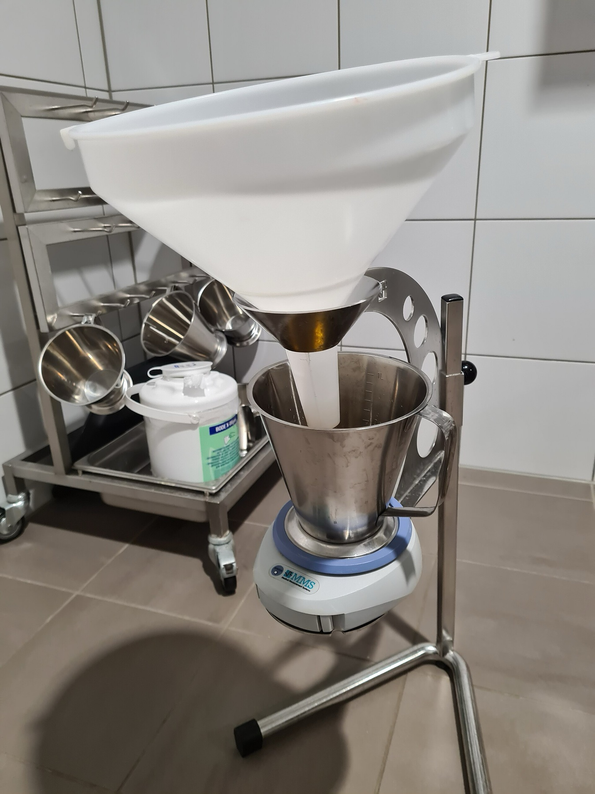

Página 7 · O padrão-ouro que não é universal
Urodinâmica: quem precisa — e os três tempos
Se o diagnóstico é clínico, quando vale a pena esse exame que incomoda tanto?
Padrão-ouro que não é para todo mundo (urodinâmica ou vídeo-urodinâmica)
A urodinâmica — que na prova aparece com dois nomes, urodinâmica ou vídeo-urodinâmica (mesmo exame, mesmo padrão-ouro) — é o padrão-ouro, mas não é para todo mundo. O tratamento inicial é clínico: se a queixa, a anamnese e o exame físico já indicam o diagnóstico, começa-se o tratamento (que é clínico) sem urodinâmica. Quando a clínica já mostra a perda — a paciente com incontinência de esforço que perde na sua frente ao tossir, com bexiga cheia —, não precisa de urodinâmica: pode-se tratar direto. Guarde os dois nomes: a banca troca um pelo outro para ver se você sabe que é o mesmo exame.
As indicações: não viu a perda · falha do clínico · antes de operar IUE · antes de prolapso grande
A urodinâmica se indica em quatro situações. (a) Incontinência de esforço que não perde durante o exame físico — você não viu a perda e precisa documentá-la. (b) Falha do tratamento clínico — a paciente não respondeu e não se entende por quê. (c) Antes de operar uma incontinência de esforço. (d) Antes de operar um prolapso grande. As duas primeiras resolvem dúvida diagnóstica; as duas últimas protegem a decisão cirúrgica.
A incontinência oculta: o prolapso que mascara a incontinência
A quarta indicação merece parágrafo próprio porque é pegadinha fina e ponte para a discussão de distopia. Um prolapso grande (uma cistocele ou um prolapso uterino grande) que envolve a parede vaginal anterior pode gerar uma obstrução infravesical — a bexiga desce tanto que obstrui a própria saída, e a paciente que tinha incontinência passa a ter até dificuldade para urinar. Ao corrigir o prolapso, a incontinência que estava mascarada “aparece”, e a paciente culpa a cirurgia. Por isso: urodinâmica ANTES de operar o prolapso grande — para saber se ela já não tinha a incontinência oculta antes. (Some-se que a própria cirurgia pode desencadear incontinência ao mexer no assoalho / na teoria integral da continência.) Esta é a incontinência oculta, e ela é o gancho para a discussão de distopia.

O funil, o recipiente e a balança eletrônica compõem o fluxômetro do primeiro tempo — a urofluxometria. O setup completo acrescenta ainda a sonda vesical e o cateter retal das fases seguintes.
Benreis. Uroflowmeter 2023. Via Wikimedia Commons, sob CC BY-SA 4.0.
real de equipamento (uroflowmetria) — parte do setupTempo 1 — urofluxometria (esvaziamento; pouco relevante na incontinência)
O exame tem vários elementos, mas os três que interessam à prova são urofluxometria, cistometria e estudo miccional. O primeiro é a urofluxometria, que avalia a fase de esvaziamento vesical, no início do exame. A paciente entra com a bexiga cheia, senta numa cadeira em posição semi-sentada (não é a posição ginecológica) e urina num funil que tem, na ponta, um transdutor (o fluxômetro). Mede-se quantidade de urina, tempo e fluxo. Não há sonda nessa fase. Na incontinência ela é pouco relevante — importa mais na avaliação neurológica ou no homem com jato fraco/obstrução.
Tempo 2 — cistometria (enchimento; o que NÃO pode acontecer nesta fase)
O segundo tempo é a cistometria, a fase de enchimento. Depois de esvaziar, sonda-se a bexiga (sonda vesical) e coloca-se um cateter retal. Enche-se a bexiga aos poucos, com cuidado para o soro não ficar muito frio — soro muito frio geraria contração do detrusor e falsearia o exame. Durante o enchimento, observa-se se o detrusor contrai, se há dor e se há perda; conversa-se com a paciente, pede-se que tussa (manobra provocativa) e, se perder, registra-se em que pressão. Marca-se o primeiro desejo de urinar e o desejo incontrolável (quando ela não aguenta mais) — e aí para-se o exame. A pegadinha da fase: no enchimento, a bexiga não pode perder urina, ainda que a paciente tenha muita vontade — não se espera perda, não se espera dor e não se espera o detrusor contraindo. Motivo: na fase de enchimento a bexiga não deveria contrair (é na fase de esvaziamento que ela contrai).
Tempo 3 — estudo miccional (esvaziamento provocado; resíduo normal < 50 ml)
O terceiro tempo é o estudo miccional (também chamado estudo de fluxo-pressão): quando a paciente chegou ao máximo que aguentou, pede-se que urine. Aqui o detrusor DEVE contrair — é a fase em que ele deveria contrair. E avalia-se o volume residual: o normal é menor que 50 ml. Se ficar mais de 50 ml, há dificuldade de esvaziar a bexiga. Fecha assim a sequência: enchimento em que nada acontece, esvaziamento em que o detrusor trabalha e a bexiga se esvazia deixando quase nada.
Urofluxometria
Esvaziamento; senta no funil (semi-sentada); mede quantidade, tempo e fluxo. Sem sonda — pouco relevante na incontinência.
Cistometria
Enchimento; sonda vesical + cateter retal; observa detrusor, dor e perda; marca 1º desejo e desejo incontrolável.
nesta fase NÃO pode perder / dor / detrusorEstudo miccional
Esvaziamento provocado; o detrusor DEVE contrair; avalia-se o resíduo.
resíduo normal < 50 mlQuiz — fixação
Paciente com prolapso uterino grande e queixa de dificuldade para urinar será submetida a cirurgia corretora. Por que solicitar urodinâmica antes?
- B — a virada. O prolapso grande obstrui a saída e esconde a incontinência; ao corrigi-lo, ela se revela — a urodinâmica pré-operatória documenta a oculta antes.
- A. O estadiamento do prolapso é clínico (exame/POP-Q), não função da urodinâmica.
- C. A urodinâmica não é de rotina — é para o prolapso GRANDE (e as outras três indicações); universalizá-la contraria “não é para todo mundo”.
- D. Não é medida de pressão arterial; a “pressão” da urodinâmica é a intravesical/abdominal.
Durante a cistometria (fase de enchimento), qual achado é ESPERADO como normal?
- C — a virada. No enchimento a bexiga armazena passivamente — não perde, não dói e não contrai; contração aqui é anormal (hiperatividade detrusora).
- A. Perder no enchimento, mesmo com muita vontade, é justamente o que NÃO pode ocorrer — é achado patológico.
- B. O detrusor deve contrair no ESVAZIAMENTO (tempo 3), não no enchimento — inverter as fases é o erro.
- D. O resíduo se avalia no estudo miccional, e > 50 ml é anormal — não um achado esperado do enchimento.
Feito o exame, resta a competência que a banca mais cobra: ler o traçado e descobrir quem, afinal, fez a força.